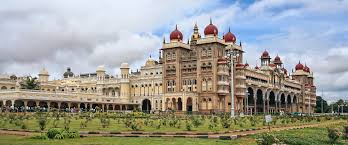
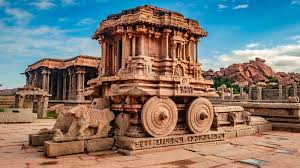
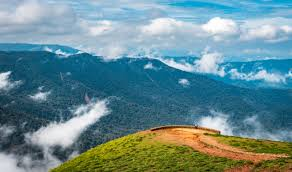
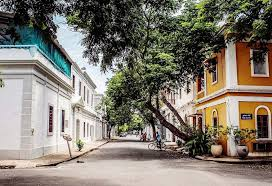
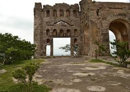
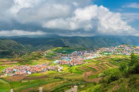

Explore the Beauty of Kerala Backwaters

Kerala's backwaters offer a unique and tranquil experience. Glide through the serene waterways on a traditional houseboat and enjoy the lush green landscapes and vibrant wildlife.
Explore the Beauty of Kerala Backwaters
Kerala's backwaters offer a unique and tranquil experience. Glide through the serene waterways on a traditional houseboat and enjoy the lush green landscapes and vibrant wildlife. |
The Cultural Riches of Mysore Mysore is known for its royal heritage, including the stunning Mysore Palace and the grand Dussehra Festival. Explore its beautiful gardens, temples, and the famous Mysore Zoo. |
Discover the Temples of Hampi Hampi is a UNESCO World Heritage Site renowned for its ancient temples and ruins. Wander through the historical landscape and experience the grandeur of the Vijayanagara Empire. |
Relax in the Hill Station of Coorg Coorg, known for its coffee plantations and scenic beauty, is a perfect getaway. Enjoy the cool climate, visit the Abbey Falls, and explore the lush greenery. |
Experience the Vibrance of ChennaiChennai is a bustling city with rich cultural heritage. Visit the Marina Beach, explore the historic temples, and enjoy the local cuisine. |
Unwind in Pondicherry's French Quarters Pondicherry offers a blend of French colonial charm and traditional Indian culture. Stroll through its picturesque streets, visit Auroville, and enjoy the coastal beauty. |
Explore Vijayawada: The City of Victory
Vijayawada, known for its vibrant culture and historical significance, features attractions like the Kanaka Durga Temple, Undavalli Caves, and the Prakasam Barrage. Enjoy the city's bustling markets and rich heritage. |
Discover Hyderabad's Historical Gems Hyderabad, with its blend of modernity and tradition, is home to landmarks such as the Charminar, Golconda Fort, and the historic Qutub Shahi Tombs. Explore the city's culinary delights and vibrant culture. |
Explore the Hill Station of Kodaikanal Kodaikanal, nestled in the Western Ghats, offers a serene escape with its lush forests, scenic lakes, and pleasant climate. Visit attractions like the Kodai Lake, Coaker's Walk, and the Pillar Rocks. |